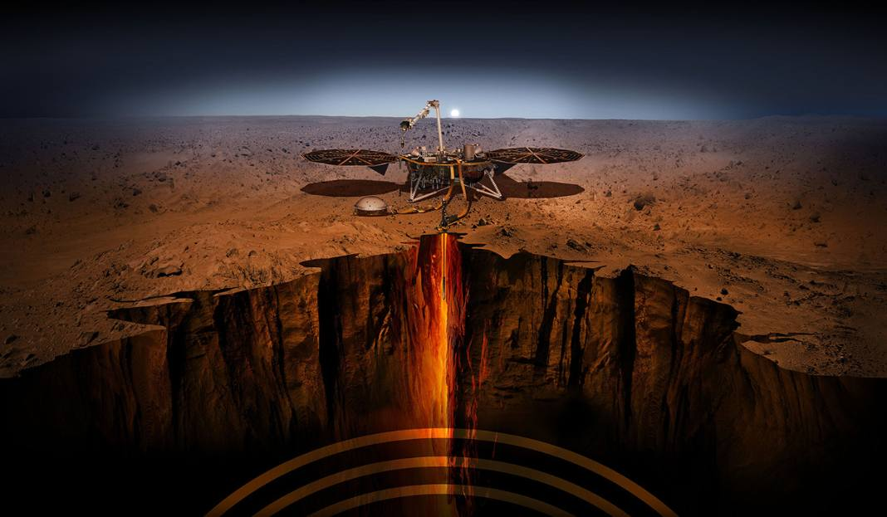
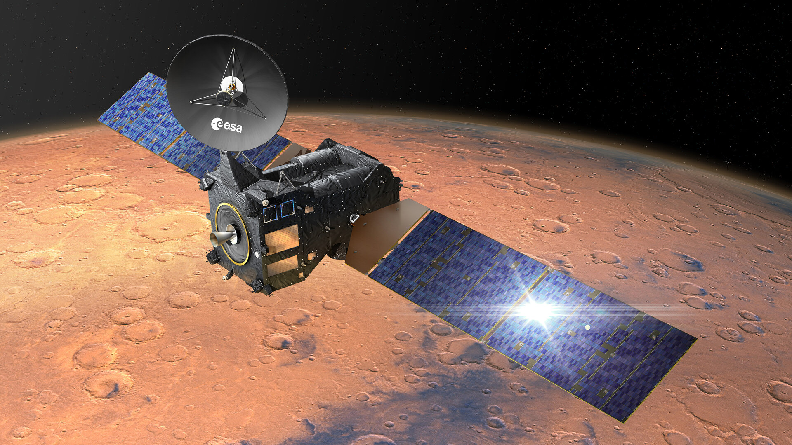
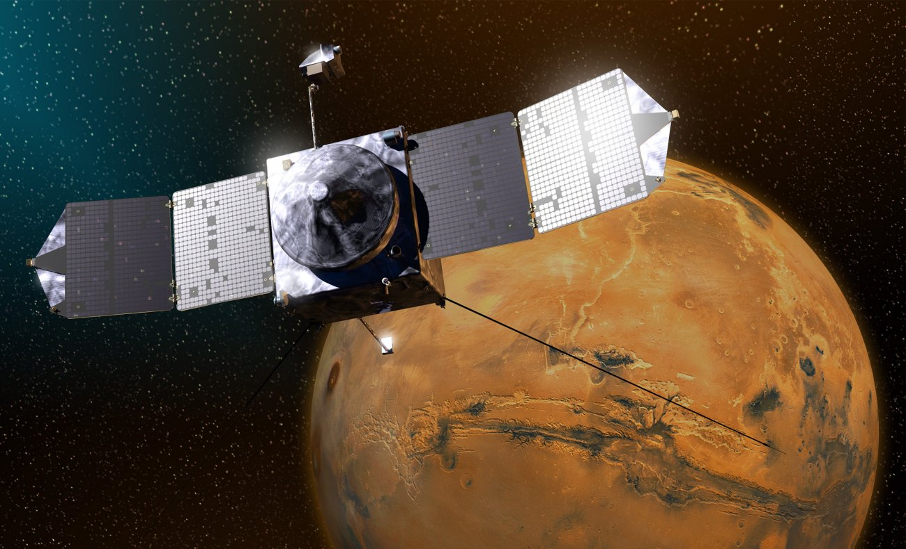
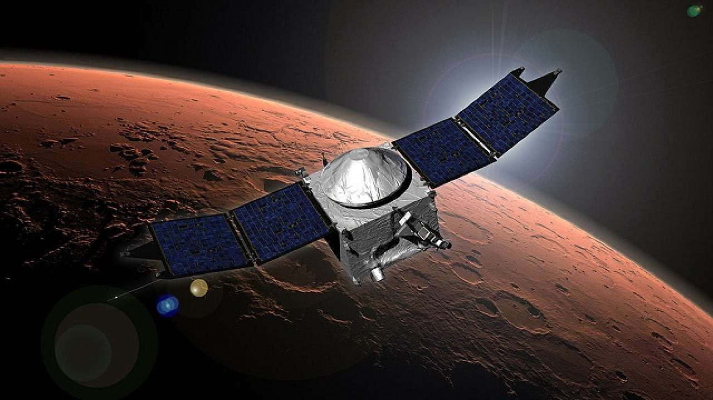
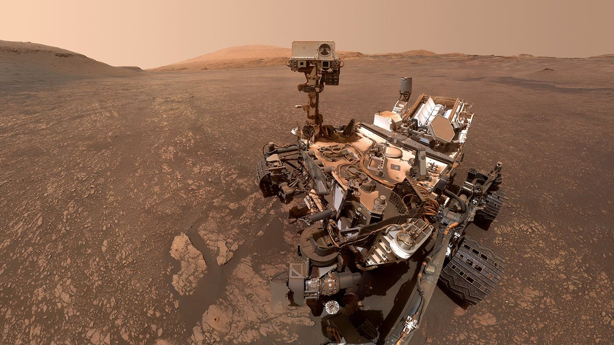
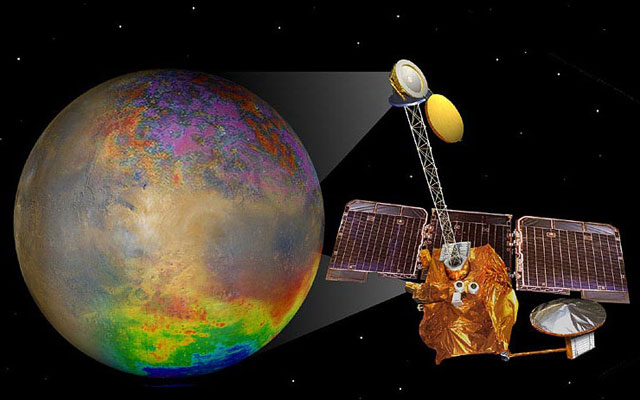

|  | InSight Misja zorganizowana przez NASA. Sonda wystartowała 5 maja 2018 roku po 6 latach przygotowań. Sukcesywnie wylądowała dopiero 26 listopada 2019 roku. Nazwa to skrót od angielskiego “Interior Exploration using Seismic Investigations, Geodesy and Heat Transport.” co na polski tłumaczy się jako Eksploracja wnętrza używając sejsmicznych sposobów, geodezji i transportu ciepła. Właśnie tych metod sonda używa do badania składu planety i ewentualnych podobieństw do Ziemi czy Księżyca. |
|  | ExoMars Trace Gas OrbiterPierwsza misja programu ExoMars zorganizowana przez ESA.Wystartowała 14 marca 2016, na orbicie marsa dotarła 19 października 2016 roku. Celem tego przedsięwzięcia jest badanie składu atmosfery planety. Jest to ważne zadanie, ponieważ składniki takie jak metan mogą świadczyć o możliwości życia na Marsie bez większych przeszkód atmosferycznych. |
|  | MAVENTo skrótowa nazwa angielskiego "Mars Atmosphere and Volatile Evolution" czyli atmosfera Marsa i ewolucja lotna. Sondę wypuszczono 18 listopada 2013. Na orbitę marsjańską udało jej się dotrzeć 22 września 2014 r. Misja ukazała pierwsze w historii pomiary, które pomogły naukowcom zrozumieć klimat i procesy zmienne atmosfery Czerwonej Planety. |
|  | Mars Orbiter Mission Pierwsza misja interplanetarna indyjskiej organizacji(ISRO). Polegała tylko na sprawdzeniu możliwości sprzętu niosąc ze sobą 15-kilogramowy balast ze sprzętem badawczym. Orbiter został wystrzelony 5 listopada 2013. Na orbitę wszedł 24 września 2014 czyli dwa dni po amerykańskiej sondzie MAVEN. |
|  | Curiosity To łazik nowej generacji, zastępujący wcześniejsze modele Spirit i Opportunity. Nazwa tłumaczy się na Ciekawość co oddaje charakter tej wyprawy.Został wysłany przez NASA 26 listopada 2011. Wylądował 6 sierpnia 2012 w kraterze, który jak się okazało był częściowo pozostałością rzeki. Udało się mu także znaleźć materię organiczną co wskazuje na obecność organizmów żywych. |
 |
MR Orbiter Mars Reconnaissance Orbiter, czyli "orbiter rekonesansu Marsa" to wysłany przez NASA 12 sierpnia 2005 roku orbiter. Został wyposażony w najmocniejszą kamerę jaką kiedykolwiek wysłano na Marsa w celu szukania na powierzchni dowodów na przeszłe istnienie wody. Pomaga także wybierać lądowiska dla innych operacji i monitoruje codzienną pogodę planety. |
|  | 2001 Mars Odyssey Sprzęt wysłany przez NASA 7 kwietnia 2001 roku. Pozyskuje zdjęcia powierzchni Marsa w wysokiej rozdzielczości. Podczas tej misji wykryto pokłady wody pod powierzchnią planety przy biegunach. Udało się także wykryć radiację, której poziom przekraczał 3 razy spodziewane wyniki |